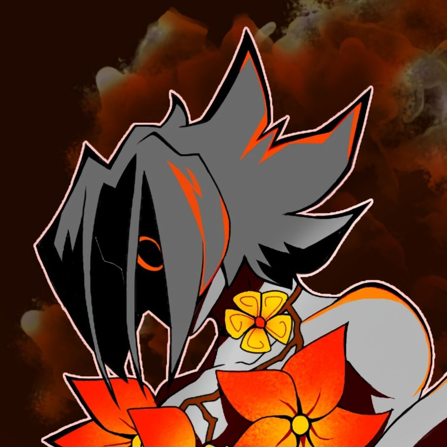

Welcome to the FrutigerSpace Wikipedia!
Dive into the vibrant and nostalgic universe of Frutiger Space, the upcoming game that blends retro-futuristic aesthetics with deep exploration and a loyal invest community. This wiki is your comprehensive guide to everything Frutiger Space has to offer, from its well made maps, to it's community driven events.
Meet our Team

Jamal
Syrus - Lead Designer / WebDev
Toya
Designer / WebDev

Mysteri
Artist
Titsou
BackEnd / WebDev